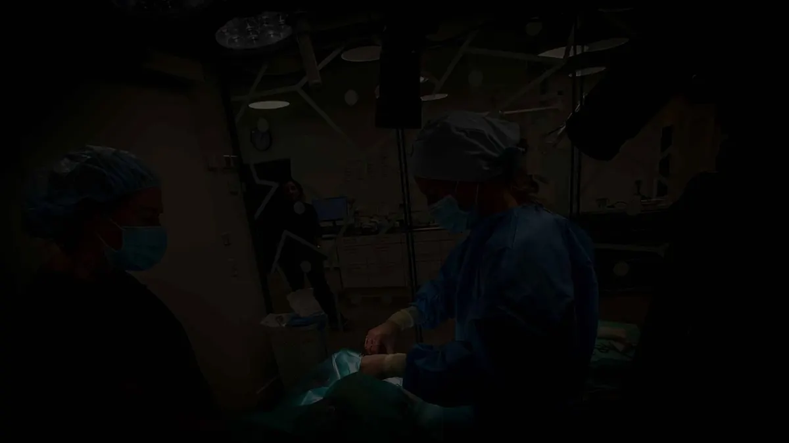
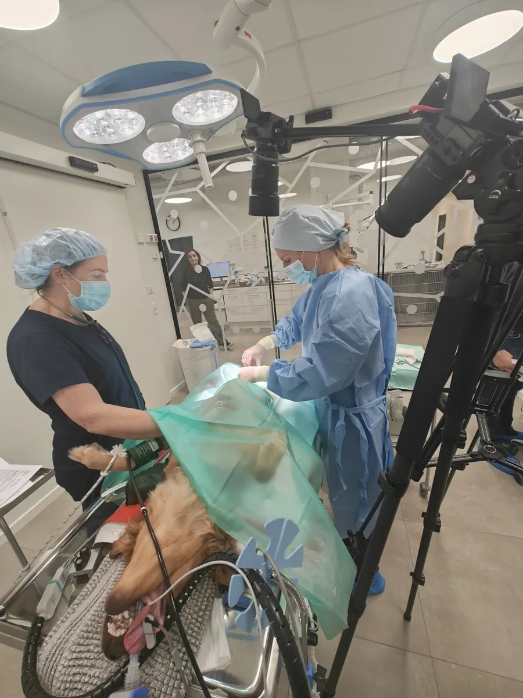
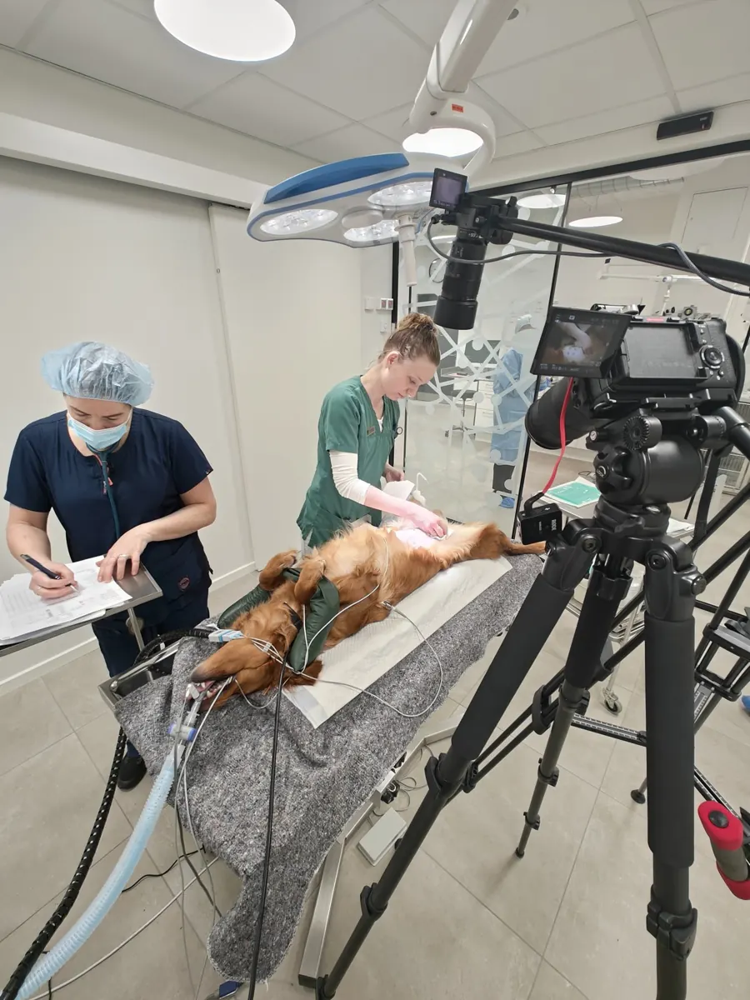
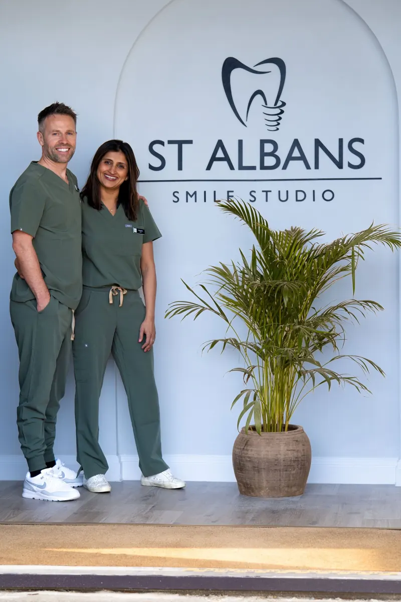
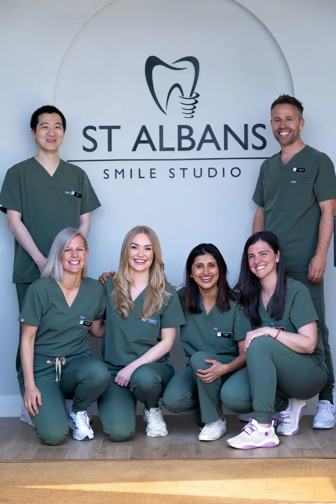
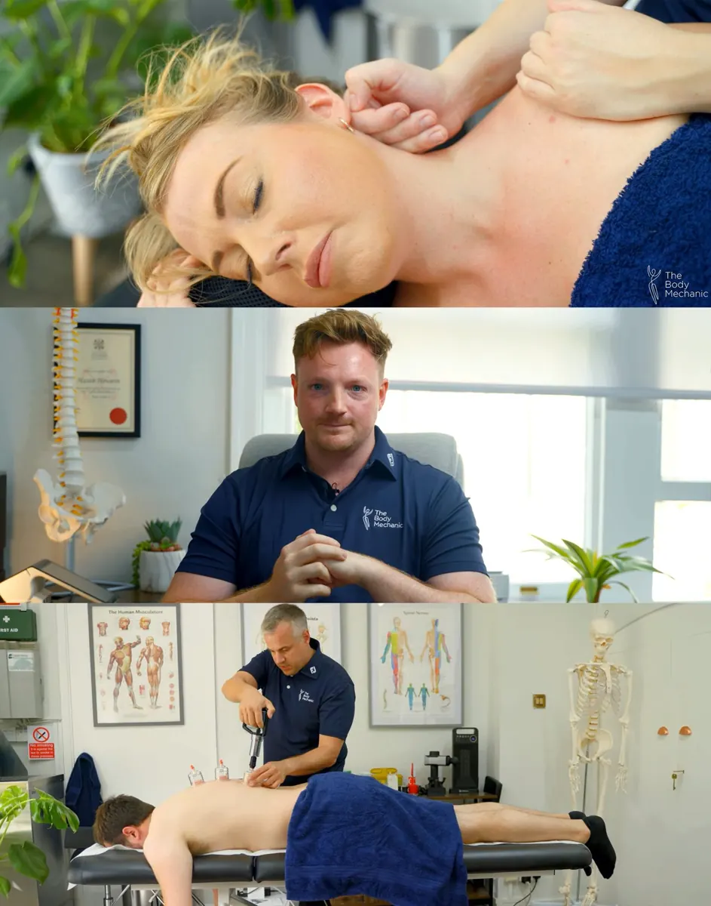
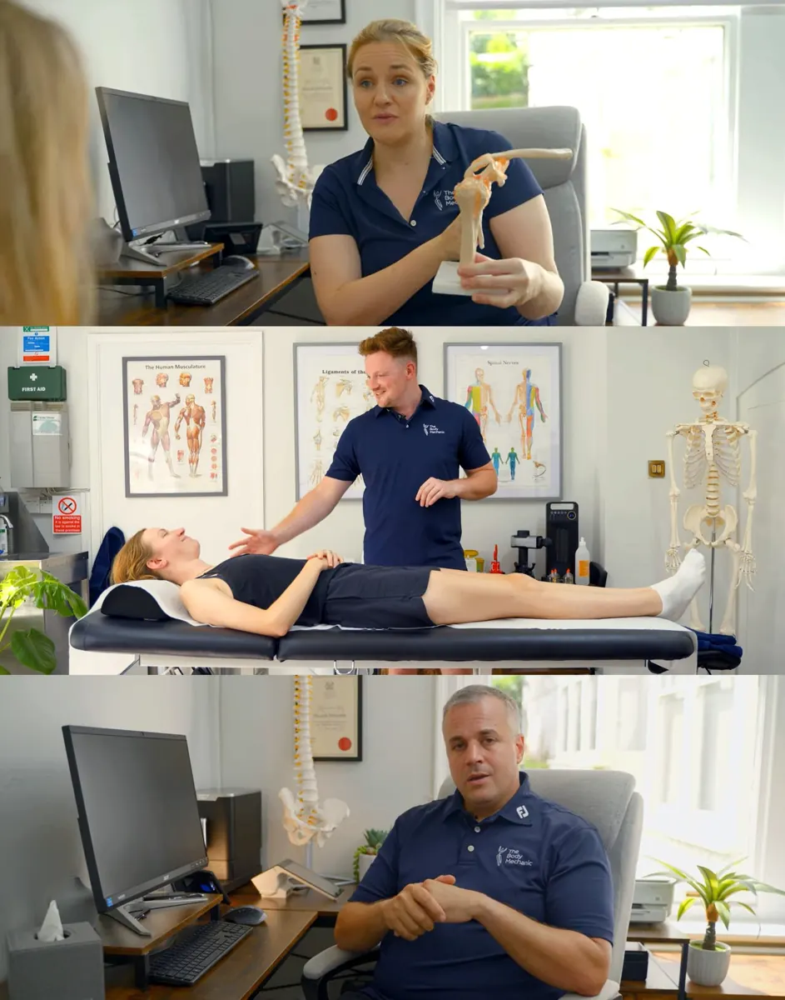

Medical Folio

BRADY CARE
Discover our work with Brady Care, a global leader in veterinary education. Brady Care films and trains surgical vets worldwide on essential spay and castration techniques, raising standards of care everywhere.
For this shoot in Denmark, commissioned by The Broadcast Business. I used a two-camera setup to capture the procedures in detail and mic'd the surgeon to record her step-by-step narration.
My director was able to observe the entire process through the monitor. The result is an immersive educational resource showcasing Brady Care's vital mission.


ST ALBANS SMILE STUDIO
We create high-quality video content tailored for dental clinics—capturing everything from professional talking pieces to sleek clinic visuals. With a streamlined two-person crew, we deliver broadcast-quality 4K videos ideal for websites, marketing, and patient communication.


THE BODY MECHANIC
Promotional video for The Body Mechanic website. Showing off their services through massage, osteopathic and shockwave therapies.
Filmed at their premesis in Hemel Hempstead.

